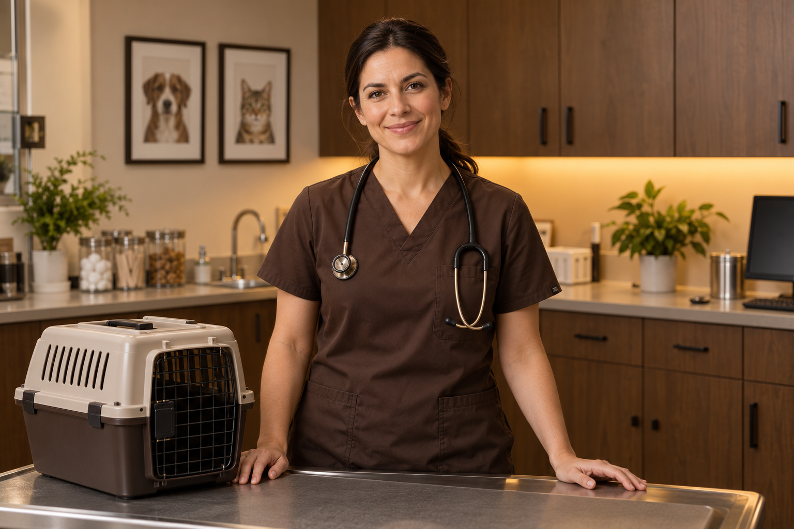

MVDr. Jana Novotná
Interní medicína · kočky a psiPečlivé vyšetření a klidné vysvětlení. To je základ každé její konzultace.
Zkušené ruce. Laskavý přístup. Společná láska ke zvířatům.
Pečlivé vyšetření a klidné vysvětlení. To je základ každé její konzultace.
Propojuje preciznost při zákrocích s pozornou následnou péčí.

S trpělivostí pečuje i o ty nejmenší a nejplašší pacienty.